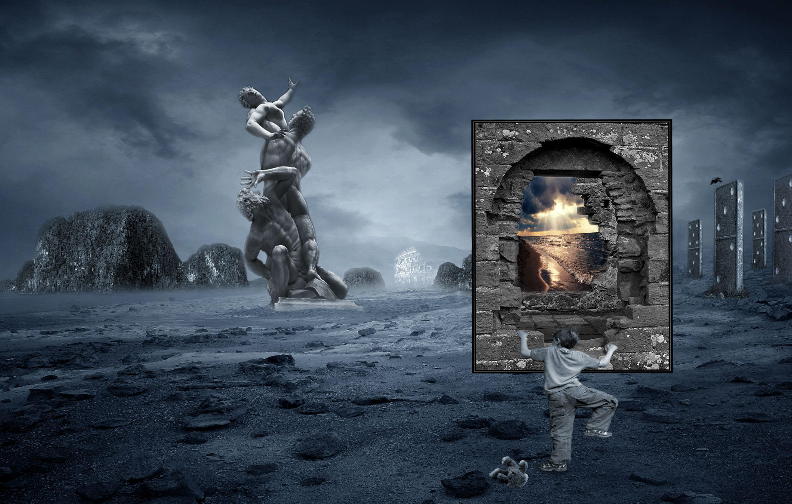

WORK


Antonio Amodeo is a film director, screenwriter, producer, editor, and composer who currently resides in Canada. Antonio has been noted for his use of symbolism, fantasy, realism and blending of eclectic rock music with image. His body of work to date addresses such themes as identity, guilt, redemption, and machismo.